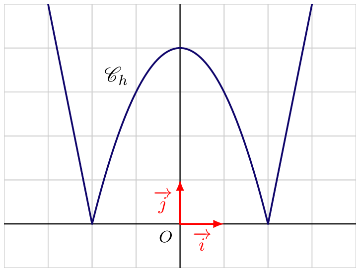

Feuilles d’exercices — Nombre dérivé, Dérivées des fonctions usuelles
Taux d’accroissement - Nombre dérivé
Exercice 1
Exercice 1 :
On considère la fonction \(f\) définie sur \(\R\) par \(f(x)=-2x^2+3\)
- On considère \(\tau(h)\) le taux d’accroissement de \(f\) entre \(2\) et \(2+h\), pour tout \(h \in \R\).
Exprimer \(\tau(h)\) en fonction de \(h\). - Montrer que la fonction \(f\) est dérivable en \(2\).
Exercice 2
Exercice 2 :
On considère la fonction \(f\) définie sur \(\R-\{-5\}\) par \(f(x)=\frac{2}{x+5}\)
- On considère \(\tau(h)\) le taux d’accroissement de \(f\) entre \(1\) et \(1+h\), pour tout \(h \in \R\) tel que \((1+h)+5 \neq 0\).
Exprimer \(\tau(h)\) en fonction de \(h\). - Montrer que la fonction \(f\) est dérivable en \(1\).
Exercice 3
Exercice 3 :
Montrer que la fonction \(f\) est dérivable en \(a\)
- \(f(x)=\dfrac{1}{x}\) et \(a=2\)
- \(f(x)= x+ \dfrac{1}{x}\) et \(a=-1\)
- \(f(x) = \dfrac{1}{x^2+1}\) et \(a=0\)
Exercice 4
Exercice 4 :
On appelle valeur absolue, la fonction \(f\) définie sur \(\R\) par
\[ f(x)= \abs{x} = \begin{cases} x & \text{si } x \geqslant 0 \\ -x & \text{si } x < 0 \end{cases} \]
- Démontrer que, pour tout réel \(a\) non nul, \(f\) est dérivable en \(a\).
On considérera \(a >0\) et \(h\) un réel tel que \(a+h >0\). - Déterminer \(\tau\) le taux d’accroissement de \(f\) en \(0\).
- En déduire la valeur de \(\tau(h)\) en fonction de la valeur de \(h\).
- Expliquer pourquoi la fonction valeur absolue n’est pas dérivable en \(0\).
Exercice 5
Exercice 5 :
- Qu’affiche l’algorithme ci-contre si on saisit le nombre \(a = 3\) ?
- À quoi correspond la variable \(h\) ?
- Modifier cet algorithme afin de conjecturer le nombre dérivé en \(2\) de la fonction définie sur \([-4\,;\,4]\) par \(f(x) = \sqrt{20 - x^2}\).
from math import *
a = eval(input("Saisir le nombre a"))
def f(x):
return sqrt(20 - x**2)
for i in range(6):
h = 10**(-i)
t = (f(a+h) - f(a))/h
print(t)Exercice 6
Exercice 6 :
On donne ci-dessous les représentations graphiques des fonctions \(f\), \(g\), \(h\) et \(k\).

Pour chacune d’elles, préciser en quel(s) point(s) les fonctions associées ne sont pas dérivables.
Tangente à une courbe
Exercice 7
Exercice 7 :
On considère la fonction \(f\) dont on donne la représentation graphique ci-dessous, ainsi que ses tangentes au point \(A\), \(B\), \(C\) et \(D\).
Déterminer \(f'(-2)\), \(f''(2)\), \(f'(1)\) et \(f'(0)\).
Exercice 8
Exercice 8 :
On donne ci-dessous les représentations graphiques de deux fonctions.
Lire graphiquement l’abscisse \(a\) du point de tangence et la valeur \(f'(a)\).
Exercice 9
Exercice 9 :
On considère une fonction \(f\) dérivable en \(3\) et en \(6\) tel que \(A(6\,;\,3) \in \mathscr{C}_f\), la représentation graphique de \(f\).
- Déterminer l’équation de la tangente à \(\mathscr{C}_f\) au point d’abscisse \(3\) sachant que \(f'(3)=-2\) et que la tangente passe par \(A(-1\,;\,4)\).
- Déterminer \(f'(6)\) sachant que la tangente à \(\mathscr{C}_f\) au point d’abscisse \(6\) passe par \(C(8\,;\,0)\).
Exercice 10
Exercice 10 :
Soit \(\mathscr{D}\) la droite d’équation \(y=5x-2\), la tangente à la représentation graphique de la fonction \(f\) au point \(A\) d’abscisse \(-1\).
Déterminer \(f'(-1)\) et \(f(-1)\).
Exercice 11
Exercice 11 :
On considère la fonction \(f\) définie sur \(\R^*\) par \[f(x)=\frac{x}{3} - \frac{5}{x}.\] On note \(\mathscr{C}\) la représentation graphique de la fonction \(f\) et on note \(T_{a}\) la tangente à \(\mathscr{C}\) au point d’abscisse \(a\).
On admet que pour tout réel \(a\) non nul, \[f'(a)=\frac13 + \frac{5}{a^2}.\]
- Démontrer que pour tout réel \(a\) non nul, \(T_a\) et \(T_{-a}\) sont parallèles.
- Démontrer que \(\mathscr{C}\) n’admet aucune tangente de coefficient directeur \(m\), pour \(m \leqslant \frac{1}{3}\).
Exercice 12
Exercice 12 :
On donne sur la figure ci-dessous la courbe représentative \(\mathcal{C}\) d’une fonction \(f\). Sont aussi tracées les droites tangentes à la courbe aux points \(A\), \(B\) et \(C\).On note \(f'\) la dérivée de la fonction \(f\). À partir du graphique et des renseignements fournis et en justifiant vos réponses :
- Donner, sans justifier, par lecture graphique \(f(-2)\), \(f(-1)\) et \(f(1)\).
- Donner, sans justifier, par lecture graphique \(f(-2)\), \(f(-1)\) et \(f(1)\).
- Donner, en justifiant, par lecture graphique \(f'(-2)\), \(f'(-1)\) et \(f'(1)\).
- Déterminer l’équation de la tangente à \(\mathcal{C}\) au point d’abscisse \(1\).
- Déterminer le nombre de solutions de l’équation \(f'(x)=0\).
- Pour chacune des affirmations ci-dessous, dire si elle est vraie ou si elle est fausse en justifiant votre choix.
- \(f'(0) \times f'(1) \leqslant 0\).
- \(f'(-1) \times f(1) \leqslant 0\).
- \(f'(0) \times f'(1) \leqslant 0\).
Exercice 13
Exercice 13 : (Extrait Devoir 2024)
On considère la fonction \(f\) ; on donne ci-dessous la représentation graphique.
On considère \(T_A\), \(T_B\) et \(T_C\) les tangentes à \(\mathscr{C}_f\) respectivement aux points \(A\), \(B\) et \(C\).
- Déterminer graphiquement \(f(-2)\) et \(f(-1)\).
- Déterminer graphiquement \(f'(-2)\) et \(f'(-1)\).
- Déterminer, sans justifier, les équations réduites des tangentes en \(C\) et \(B\).
- Déterminer graphiquement \(f(-2)\) et \(f(-1)\).
- On admet que \(f'(1)=-4{,}5\). Tracer la tangente à \(\mathscr{C}_f\) au point \(D\).
- Résoudre l’équation \(f'(x)=0\).
- On considère l’affirmation : « \(f(-3) \times f'(-3) > 0\) ».
Préciser, en justifiant votre réponse, si cette affirmation est vraie ou fausse.
Tangente passant par un point
Exercice 14
Exercice 14 :
On considère la fonction \(f\) définie sur \(\R\) par \[f(x)=x^2-2x+5\]
- Montrer que la fonction \(f\) est dérivable en tout point \(a \in \R\).
- Déterminer une équation de la tangente à la représentation graphique de la fonction \(f\) au point d’abscisse \(2\).
- Étudier le signe de \(f(x)-(2x+1)\).
- En déduire la position relative de \(\mathscr{C}\) et de sa tangente au point d’abscisse \(2\).
Exercice 15
Exercice 15 :
On considère la fonction \(f\) définie par \(f(x)=x^2\).
- Déterminer l’équation de la tangente à la représentation graphique de \(f\) au point d’abscisse \(a\).
- Démontrer que la représentation graphique de \(f\) est au-dessus de chacune de ses tangentes.
- Déterminer l’équation de la tangente à la représentation graphique de \(f\) au point d’abscisse \(a\).
- Déterminer la ou les tangentes de \(f\) passant apr le point \(A(-3\,;\,8)\).
Exercice 16
Exercice 16 :
- La courbe \(\mathcal{C}\) d’équation \(y = x^3\) admet-elle des tangentes de coefficient directeur \(6\) ? \(-1\) ?
- Déterminer le nombre de tangente à \(\mathcal{C}'\) d’équation \(y =x^2\), passant par \(Q(2 ; - 1)\) peut-on tracer.
Exercice 17
Exercice 17 :
Soit la fonction \(f\) définie sur \(\R\) par \(f(x) = x^2-3x - 1\).
On note \(\mathcal{C}_f\) sa représentation graphique.
- Déterminer les abscisses des points d’intersection de de \(\mathcal{C}_f\) avec l’axe des abscisses.
- Démontrer que l’équation réduite de la tangente à \(\mathcal{C}_f\) au point d’abscisse \(a\) est donné par \[y = (2a-3)x - a^2-1 \]
- Existe-t-il un point de \(\mathcal{C}_f\) pour lequel la tangente est parallèle à la droite d’équation \(y = x\) ?
- Existe-t-il un point pour lequel la tangente passe par l’origine du repère ?
Exercice 18
Exercice 18 :
On considère deux fonctions \(f\) et \(g\) définies et dérivables sur \(\R\).
On note respectivement \(\mathscr{C}_f\) et \(\mathscr{C}_g\) leur représentation graphique.
- Démontrer que \(\mathscr{C}_f\) et \(\mathscr{C}_g\) admettent une tangente commune si et seulement si \[ \left\{\begin{array}{l} f'(a)=g'(b)\\ f'(a)(b-a)=g(b)-f(a) \end{array} \right. \]
- On considère la fonction \(f:x \longmapsto 2x^2+1\) et \(g:x \longmapsto -x^2+6x-5\).
Montrer que \(\mathscr{C}_f\) et \(\mathscr{C}_g\) ont deux tangentes communes que l’on note \(T_1\) et \(T_2\).
- On note \(A\) et \(B\) les points d’intersection de \(T_1\) et \(T_2\) avec \(\mathscr{C}_f\), et \(C\) et \(D\) les points d’intersection de \(T_1\) et \(T_2\) avec \(\mathscr{C}_g\).
Montrer que \((AB)//(CD)\).
- On considère la fonction \(f:x \longmapsto 2x^2+1\) et \(g:x \longmapsto -x^2+6x-5\).
- On considère la fonction carré et la fonction inverse. Montrer que les représentations graphiques de ces fonctions ont une tangente commune.
Déterminer l’équation de cette tangente.
Applications concrètes
Exercice 19
Exercice 19 : (Elasticité demande/prix)
Le gérant d’un restaurant propose un menu unique à 50 euros.
Souhaitant améliorer son chiffre d’affaire (la recette), il décide d’augmenter le prix du menu. Il constate sur une période de trois mois :
- lorsque le menu est à euros, il sert 400 couverts hebdomadaires ;
- à chaque augmentation de 1 du prix du menu, il perd 20 couverts sur la semaine.
- Le prix du menu est à 60 euros.
Quel est le nombre de couverts qu’il peut espérer servir sur la semaine.
- Modéliser, par une fonction \(f\), le nombre de couverts servis lorsque le prix du menu est compris entre 20 euros et 70 euros.
- Le prix du menu est à 60 euros.
On appelle élasticité de la demande par rapport au prix, le pourcentage de variation de la demande pour une augmentation de 1% du prix.
Pour \(p \in [50\,;\, 70]\), lorsque le prix passe de \(p\) à \(p+h\), avec \(h >0\), l’élasticité de la demande par rapport au prix \(p\) est \[\dfrac{\dfrac{f(p+h)-f(p)}{f(p)}}{\dfrac{(p+h)-p}{p}}\]- Expliquer pourquoi l’élasticité de la demande par rapport au prix peut être approchée par \[e(p) = \frac{p \times f'(p)}{f(p}\]
- Exprimer \(e(p)\) en fonction de \(p\).
- Calculer le prix pour lequel l’élasticité est égale à \(-6\).
En déduire comment évolue le nombre de couverts hebdomadaire lorsque le prix du menu passe de \(60\) euros à \(60,60\) euros euros.
- Expliquer pourquoi l’élasticité de la demande par rapport au prix peut être approchée par \[e(p) = \frac{p \times f'(p)}{f(p}\]
Exercice 20
Exercice 20 : (Vitesse réglementée) De retour de vacances, Léane emprunte l’autoroute allemande où la vitesse n’est pas limitée. Au passage à la frontière avec la France, elle réalise que la limitation de vitesse est de 130 km/h. Afin de respecter celle-ci, elle freine et stabilise sa vitesse au bout de 4 secondes.
la distance parcorue, en mètres, par la voiture après \(t\)s secondes depuis le passage de la frontière vérifie : \[\forall t \in [0\,;\, 4], \, d(t) = \frac{480t}{t+12}\]
- Calculer la vitesse moyenne de la voiture entre \(t=0,5\) seconde et \(t=3\) secondes.
- Montrer que le taux de variation de la fonction \(d\) entre \(0,5\) et \(0,5+h\), avec \(h \in \R^*\) vaut \[V(h) = \frac{460,8}{h+12,5}\]
- Comment interpréter \(V(h)\) en terme de vitesse ?
- Démontrer que la fonction \(d\) est dérivable en \(0,5\) et en déduire la vitesse instantanée du véhicule à l’instant \(t=0,5\).
- Léane aperçoit un radar à \(t=0,5\). Aura-t-elle une contravention pour excès de vitesse ?
Exercices bilan
Exercice 21
Exercice 21 :
Pour chacune des affirmations suivantes, préciser la ou les bonnes réponses.
- Soit la fonction \(f\) définie par \(f(x) = -2x + 5\), alors :
- pour tout réel \(a\), \(f'(a) = 2\).
- \(f'(7) = -2\).
- la courbe représentative de \(f\) est confondue avec toutes les tangentes.
- Soit la fonction cube définie, pour tout réel \(x\), par \(g(x) = x^3\). On note \(\mathcal{C}_g\) sa courbe représentative.
- Pour tout réel \(a\), \(g'(a) = 3a^2\).
- La tangente à la courbe \(\mathcal{C}_g\) au point d’abscisse \(-1\) a pour coefficient directeur \(-3\).
- La tangente à la courbe \(\mathcal{C}_g\) au point d’abscisse \(2\) admet pour équation \(y = 12x - 16\).
- Soit \(h\) la fonction inverse définie sur \(\mathbb{R}^*\) par \(h(x) = \dfrac{1}{x}\). On note \(\mathcal{C}_h\) sa courbe représentative.
- Pour tout réel \(a\) strictement positif, les tangentes à la courbe \(\mathcal{C}_h\) aux points d’abscisses \(a\) et \(-a\) sont parallèles.
- \(f'(2) = -\dfrac{1}{4}\).
- La tangente à la courbe \(\mathcal{C}_h\) au point d’abscisse \(-1\) admet pour équation \(y = -x - 2\).
Exercice 22
Exercice 22 :
On considère la fonction \(f\) définie par : \[ f(x) = x^3 - x^2 + 3x + 1 \]
On note sa courbe \(\mathcal{C}\) et \(A\) le point d’abscisse \(-1\) de la courbe \(\mathcal{C}\).
Un logiciel de calcul formel donne le résultat suivant
CAS> f(x) := -x^3 + 3x^2 + 1
f(x) = -x^3 + 3x^2 + 1
CAS> diff(f(x), x)
-3x^2 + 6x + 1- Justifier que \(\mathcal{C}\) admet exactement deux tangentes parallèles à l’axe des abscisses. Préciser alors les coordonnées des points de tangence et tracer ces tangentes.
- Montrer que la tangente \(\mathcal{T}_{-1}\) à la courbe \(\mathcal{C}\) au point \(A\) d’abscisse \(-1\) a pour équation réduite : \(y = -9x + 4\).
- En quel point la courbe \(\mathcal{C}\) admet-elle une tangente parallèle à \(\mathcal{T}_{-1}\) ? Préciser l’abscisse de ce point de tangence et son équation réduite.
- En quel point la courbe \(\mathcal{C}\) admet-elle une tangente parallèle à \(\mathcal{T}_{-1}\) ? Préciser l’abscisse de ce point de tangence et son équation réduite.
- Justifier que, pour tout réel \(a\), la tangente \(\mathcal{T}_a\) à \(\mathcal{C}\) au point d’abscisse \(a\) admet pour équation réduite : \[y = (3a^2 - 2a + 3)x + (-2a^3 + a^2 + 1)
\]
- Montrer alors que \(\mathcal{T}_a\) passe par l’origine si et seulement si \((a - 1)(2a^2 + 3) = 0\).
- En déduire les équations réduites des tangentes à \(\mathcal{C}\) passant par l’origine du repère.
- Montrer alors que \(\mathcal{T}_a\) passe par l’origine si et seulement si \((a - 1)(2a^2 + 3) = 0\).